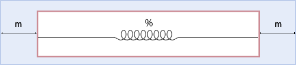

Javascript kodlarının daha hızlı yüklenmesi, dosya boyutunun azaltılması için ve kodları kopyala-yapıştır ile kolayca almak isteyenler engellemek için javascript kodlarını sıkıştırırız. Evet güzel bu özelliklerin her biri güzel ancak bir sorun olduğunda kodu göremiyoruz. Chrome yeni sürümünde güzel bir özellik getirmiş. “Sıkıştırmayı geri al” diye Türkçe’ye çevirebileceğim bir özellik ...
devamını okuGenişliği Belli Olmayan Blok-level Elemanları Yatayda Ortalamak

CSS ile yatayda ortalamak deyince aklımıza hep genişliği sabit olan alanlar geliyor. Ancak genişliği sabit olmayan elemanları ortalamak biraz daha farklı oluyor.
Genişliği sabit olan blok-level elemanları ortalamak için birçok kaynak var iken genişliği belli olmayan blok-level elemanları ortalamak için çok fazla kaynak bulamıyoruz. Google’da yaptığım aramalarda rastladığım makalelerde ...
devamını okuSürüm Kontrol Sistemi Git
Daha önceleri pek kullanmadığım sürüm kontrol sistemleri zamanla ihtiyaç haline geliyor. Sahibinden.com’da çalışmaya başladığımda bazı yenilikler ile tanıştım, bunlardan biri de Git ile tanışmam oldu, sağ olsun arkadaşların yardımı ile yavaş yavaş öğrenmeye başladım.
Ben burada kendi öğrenme sürecimde öğrenebildiklerimi sizlerle paylaşmak istedim. Bu konuda daha başlangıç seviyesindeyim ...
devamını okuJquery holdReady() fonksiyonu
Jquery son sürümü 1.6 çıktı. Dokümanları incelerken gözüme holdReady() fonksiyonu takıldı.
Jquery holdReady fonksiyonu document.ready olayını tutar veya devam etmesini sağlar. Boolean(true / false) tipi değer döndürür. true değeri dönerse document.redy olayını tutar, false değeri gelirse bırakır ve document.ready olayı gerçekleşir.
document.ready olayı DOM yüklenir ...
devamını okuCSS3 :target seçicisi
:target seçicisi CSS3 ile birlikte gelen yeni seçilerden biri. :target seçicisi doküman içi linklere odaklanmamızı sağlıyor. Daha önce bu işi yapmak için javascript ile yapıyorduk. CSS3’ün bizlere kazandırdığı birçok yenilikte olduğu gibi bu özellikte basit bir şekilde sayfalarımıza güzel etkiler kazandırır. :target sözde sınıfı :hover seçicisi gibi dinamik bir ...
devamını okufatihhayrioglu.com 5. seneyi doldurdu
Geçen sene 49 adet makale yayınlamışım. Amacım daha çok paylaşımda bulunmaktı. Ama maalesef her zaman aynı heveste olamıyor insan. Her sene daha fazla paylaşım yapmak istesem de ancak bu kadar oluyor.
Önümüzdeki sene daha çok HTML5, CSS3, Javascript, Jquery ve mobil platform üzerine paylaşım yapmayı planlıyorum. Zaman bu konuda ne ...
devamını okuHTML Dokümanında Javascript Dosyalarını Nereye Koymalıyız?
Javascript’i web sitelerine eklemek
Javascript dosyaları bir web sitesine iki şekilde eklenir. Birincisi satıriçi(inline), ikincisi ayrı bir javascript dosyası hazırlayıp harici olarak eklemek.
İlk javascript’i Hakkı Öcal’ın javascript kitapçığından öğrenmeye başlamıştım.
İlk örnek şöyle idi;
devamını oku<html> <head> <title>Merhaba Dünya!</title> <script> function merhaba() //merhaba isimli ...
Firefox 4
Mart ayı internet tarayıcıları için bayağı yoğun geçiyor. Mart’ın başlarında Google Chrome 10 çıktı, Chrome o kadar sık sürüm geçiyor ki ne zaman 10 oldu anlayabilmiş değilim. Opera’da ise bu duruma biraz daha buçuklu bir cevap verdi Opera 11.10 sürümünü beta olarak yayınladı. Ardından uzun süredir beklenen ...
devamını okuCSS ile Hiyerarşik Yerimi(Breadcrumbs) Yapmak
Kodladığım bir çok sitede eğer site alt sayfalar ve onlarında alt sayflarında oluşan karmaşık bir yapıya sahip ise genelde kullanıcıya nerede olduğu göstermek için hiyerarşik linkler kullanırız. Bunu hiyerarşik yerimi olarak isimlendirmek bana daha mantıklı geldi. Amaç web sitemizin kullanılabilirliğini arttırmaktır. Kullanıcıya bulunduğu sayfa hiyerarşik yapısıda gösterilerek daha kullanışlı bir ...
devamını okuInternet Explorer 9
Dün(14 Mart) akşamı Microsoft İnternet Explorer tarayıcısını son sürümü olan 9'un final sürümünü yayınladı. Yeni arayüzü, geliştirilmiş performansı, Windows 7 entegrasyonu vd. özellikleri ile dikkat çekiyor.
Web mecrasında çalışanları tarayıcıları ve yetenekleri konusunda çok iyi bilgi sahibi olması gerekir. Helede Arayüz Geliştiricileri için çok önemlidir. Çünkü kodumuzu yazarken ...
devamını oku